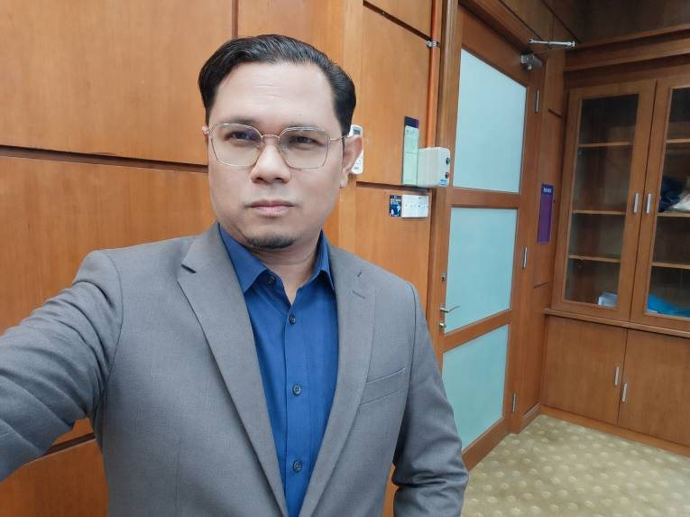
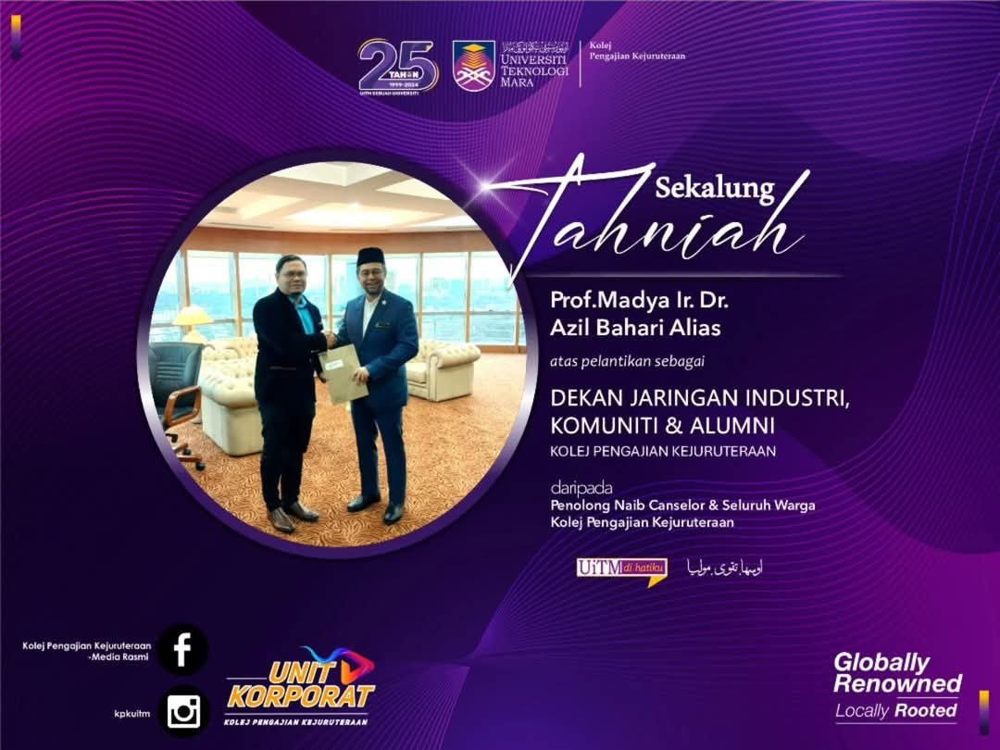
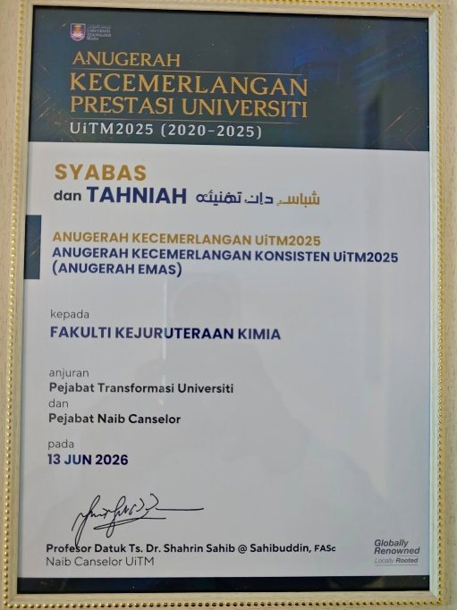
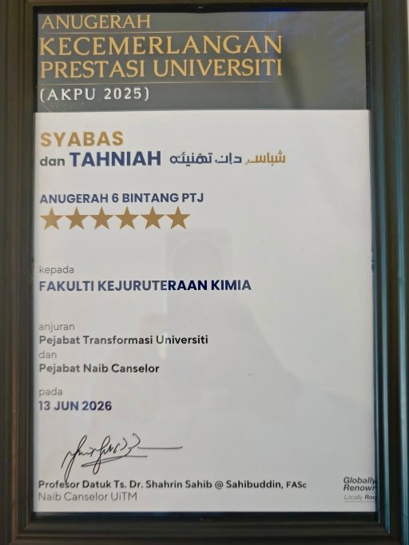
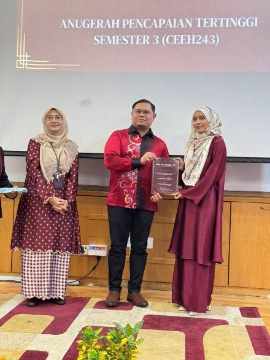
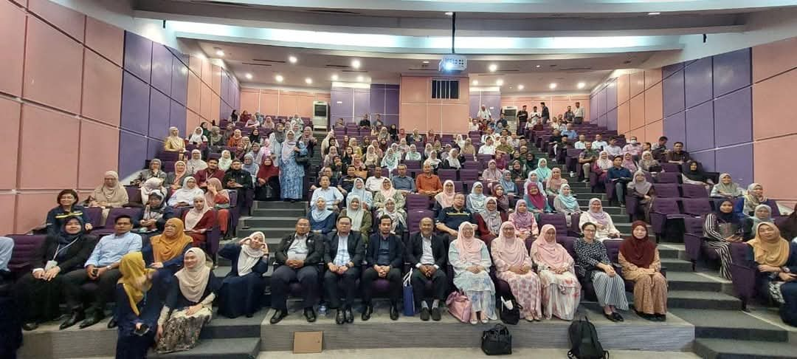
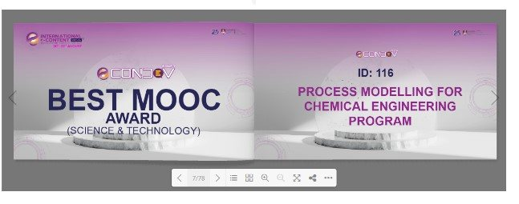
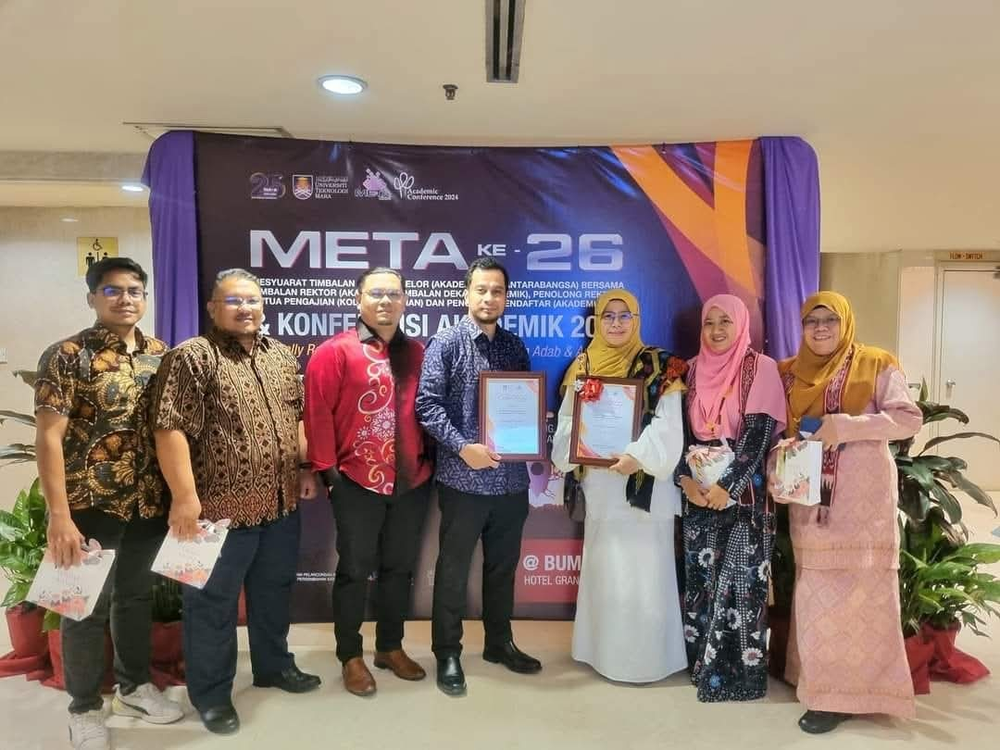
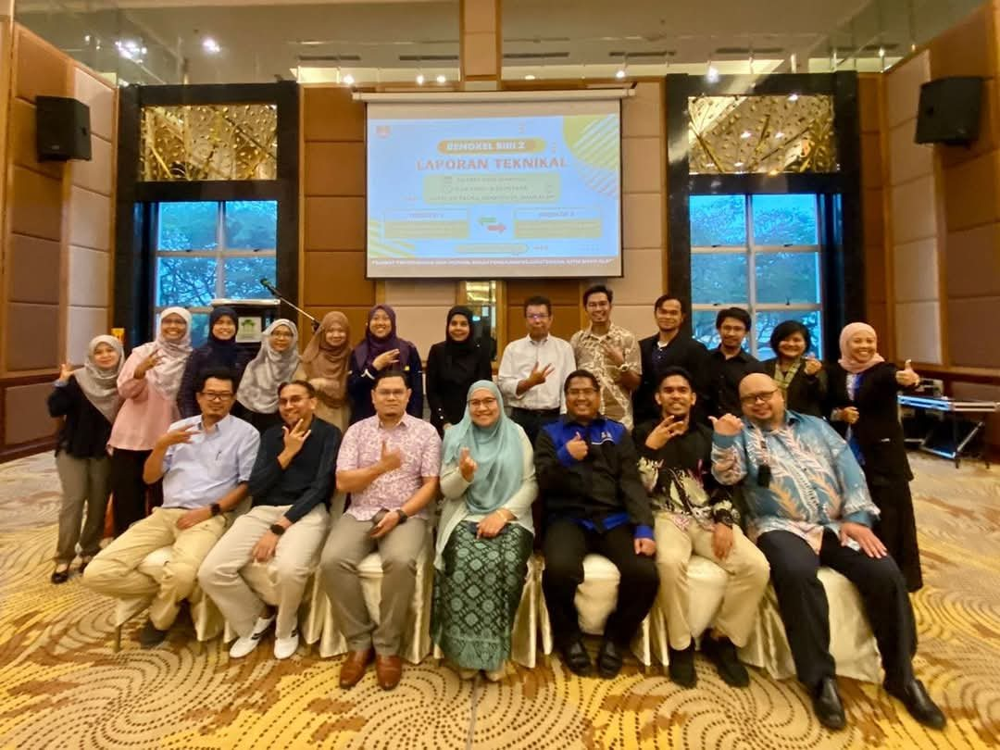
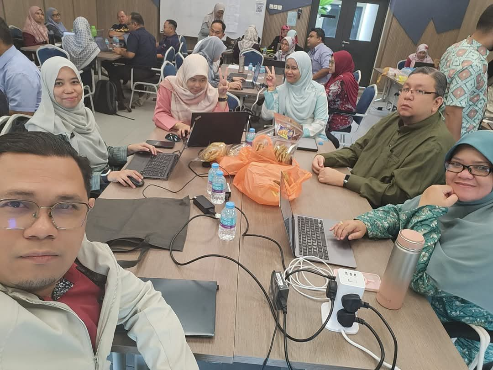

About
Process engineer, then lecturer at UiTM from 2004, PhD in combustion from Melbourne, registered Professional Engineer, and Dean of Chemical Engineering since 2025.
A career in chemical engineering
Dr Azil Bahari Alias @ Ales began his career as a process engineer before joining Universiti Teknologi MARA in 2004. He completed his PhD in combustion engineering at the University of Melbourne, studying how rice husk and other biomass burn and release gases.Ph.D. Chemical Engineering, The University of Melbourne, 2008–2012.
That foundation grew into a research programme on biomass valorisation: turning agricultural residues such as palm kernel shell, empty fruit bunch, coconut shell and rice husk into fuels, activated carbons and xerogel adsorbents that capture SO₂, H₂S, CO₂ and volatile organic compounds, and more recently into electrode materials for supercapacitors.
In parallel he built a national profile in process safety, contributing to more than 239 CIMAH safety reports and risk studies for major-hazard installations, and developing industry training on dust-explosion zoning and CIMAH compliance.Registered Professional Engineer, Board of Engineers Malaysia, 2022.
Since 2013 he has held a succession of leadership posts, and in 2025 he was appointed Dean of the Faculty of Chemical Engineering.

Ph.D. (Chemical Engineering – Combustion)
University of Melbourne, Australia
M.Sc. (Energy and Environment)
Universiti Teknologi MARA
Milestones, 2000 to 2026
2000
- Degree
B.Eng. (Hons) Chemical Engineering
Universiti Teknologi Malaysia, 1996 to 2000
- Degree
2001
- Appointment
Process Engineer
Etion Sdn Bhd, Sungai Petani
- Appointment
2004
- Degree
M.Sc. Energy and Environment
Universiti Teknologi MARA, 2002 to 2004
- Appointment
Lecturer, Faculty of Chemical Engineering
UiTM Shah Alam
- Award
First gold medal
Malaysia Public University Expo of Science, Technology and Innovation
0 papers · 0 grants begun · 1 award
- Degree
2005
- Award
Excellent Scientist Award
Ministry of Science, Technology and Innovation (MOSTI), Malaysia
- Award
Gold Medal, Geneva
33rd International Exhibition of New Techniques and Products
0 papers · 0 grants begun · 4 awards
- Award
2006
- Grant
First research grant
Fluidised-bed test rig for palm fibre, RM16,600, co-researcher
1 paper · 1 grant begun · 0 awards
- Grant
2007
- Appointment
Engineering Foundation Coordinator
UiTM, 2007 to 2008
9 papers · 3 grants begun · 1 award
- Appointment
2008
- Degree
Doctoral study begins in Melbourne
Chemical Engineering (Combustion), The University of Melbourne
- Award
Obelisk, The World Invention Award
Overall winner, with gold medal, British Invention Show 2008, London
9 papers · 0 grants begun · 9 awards
- Degree
2009
- Award
Second gold medal in London
British Invention Show 2009
- Publication
First Q1 journal paper
Waste Management
8 papers · 0 grants begun · 2 awards
- Award
2012
- Degree
Ph.D. Chemical Engineering (Combustion)
The University of Melbourne, Australia
1 paper · 2 grants begun · 0 awards
- Degree
2013
- Appointment
Deputy Dean, Student Affairs
Faculty of Chemical Engineering, 2013 to 2015
- Grant
First national grant as principal investigator
RAGS, combustion kinetics of coal and municipal solid waste, RM65,000
1 paper · 3 grants begun · 0 awards
- Appointment
2015
- Appointment
Deputy Dean, Research and Industrial Linkages
Faculty of Chemical Engineering, 2015 to 2017
10 papers · 0 grants begun · 1 award
- Appointment
2016
- Supervision
First postgraduate student graduates
M.Sc., Mohd Saufi bin Md Zaini, as co-supervisor
5 papers · 3 grants begun · 4 awards
- Supervision
2018
- Publication
13 papers in a single year
The most productive publishing year to date
13 papers · 2 grants begun · 0 awards
- Publication
2019
- Appointment
Founding Head, INPRES Research Group
Industrial Process Reliability and Sustainability, UiTM Entiti Kecemerlangan Tier 4
- Grant
FRGS as principal investigator
Monte Carlo simulation of CO₂ transport diffusion, RM99,000
11 papers · 2 grants begun · 0 awards
- Appointment
2022
- Appointment
Professional Engineer
Board of Engineers Malaysia, registered 1 April 2022
7 papers · 2 grants begun · 1 award
- Appointment
2023
- Appointment
Head, School of Chemical Engineering
College of Engineering, UiTM, 2023 to 2025
8 papers · 3 grants begun · 1 award
- Appointment
2024
- Appointment
Dean, Industry, Community and Alumni Network
College of Engineering, UiTM, 2024 to 2025
- Award
Best Research Group and Most Publications
DNA Penyelidikan @ KPK 2024, College of Engineering, UiTM
- Award
Best MOOC Award
Process Modelling for Chemical Engineering, e-CONDEV 2024
- Supervision
First Ph.D. graduate as main supervisor
Deana Qarizada
11 papers · 1 grant begun · 5 awards

Appointed Dean of ICAN, College of Engineering 
Best Research Group certificate, KPK 2024 - Appointment
2025
- Appointment
Dean, Faculty of Chemical Engineering
Universiti Teknologi MARA, 2025 to present
- Grant
Largest grant as principal investigator
Preferential flow in gas mask filters in Malaysia’s climate, RM177,800
10 papers · 2 grants begun · 0 awards
Assoc. Prof. Ir. Dr. Azil Bahari Alias - Appointment
2026
- Grant
Malaysia–Thailand research partnership
Biochar supercapacitors optimised by machine learning, RM50,000, principal investigator
4 papers · 1 grant begun · 0 awards
- Grant
Thirteen years of academic leadership
As Dean (2025 – present)
Leads its strategy towards UiTM2030. In 2025 the faculty received UiTM's 6-Star Responsibility Centre award, the Consistent Excellence Award (Gold), the Internationalisation Excellence Award and first place for Strategic Resource Generation. Ten academic staff were promoted in 2026, and the faculty hosts ICGSCE–IPET 2026.
Head of School
Led curriculum review and interim EAC accreditation for the BEng Chemical and Oil & Gas programmes, initiated the MSc in Industrial Safety & Waste Management, and saw UiTM enter the QS subject rankings in Chemical and Petroleum Engineering.
Dean, ICAN
Led industry, community and alumni networking for the College of Engineering, coordinated CEO@Faculty, and secured alumni contributions including Safetii safety software (RM 200,000).


A consistently excellent teacher
Over 20 years of teaching, student evaluations above 80% every semester, and three Excellent Service Awards (2008, 2016, 2023).
Courses taught
- Solid Waste Management (final year)
- Waste Management in Petrochemical Industries (final year)
- Process Safety
- Chemical Process Principles 1
- Chemical Process Principles 2
- Mass and Energy Balance
- Strength of Materials
Digital teaching
Won the Best MOOC Award (Science & Technology) at e-CONDEV 2024 for Process Modelling for Chemical Engineering, led the College of Engineering MOOC portfolio, and leads a UiTM–UNESA study on how well MOOCs work.
Professional courses developed
- Solid Waste Engineering
- Waste Management in Petrochemical Industries
- Waste Management in Polymer Industries
- Waste Management in Oleochemical Industries
- Introduction to Total Maximum Daily Load (TMDL) – Department of Environment (DOE) Malaysia
- Plant Operator Training Programme: Unit Operation – Emery Oleochemicals Sdn Bhd
- Plant Operator Training Programme 2: Unit Operation – Schaefer Kalk (M) Sdn Bhd





